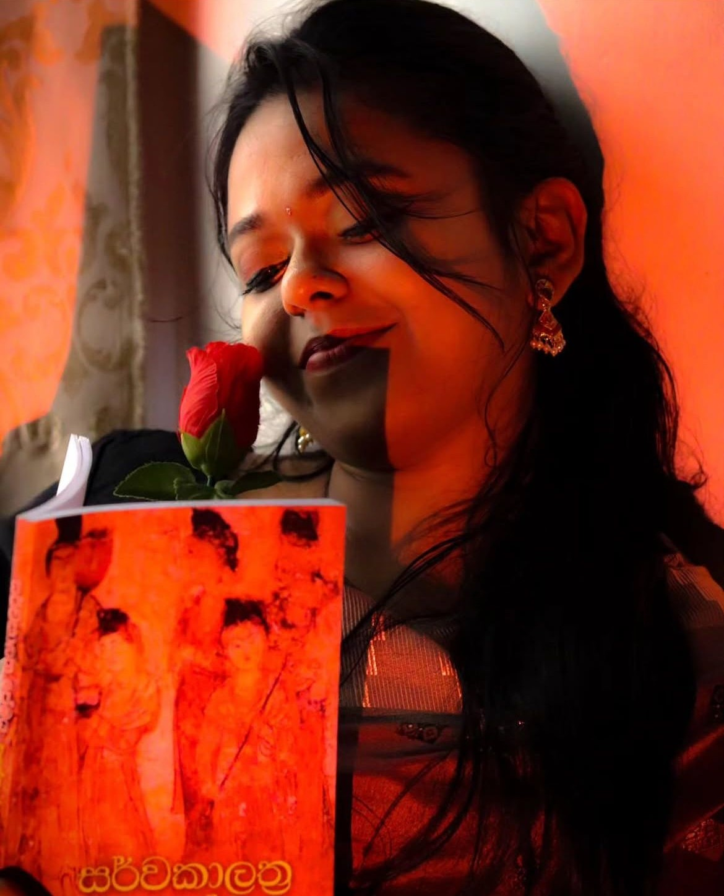

The Poet

PhotoR.Anudi Nilma Wijayapriya — Peradeniya
Hello
"Poetry is not what I do — it is how I see. The world arrives in fragments, and I spend my days trying to make them whole."
I am R.Anudi Nilma Wijayapriya, a poet and writer based in Peradeniya. I've been writing since I was old enough to know that some feelings can't be spoken — only arranged on a page and left for someone else to find.
My work draws from [themes — e.g. nature, family, memory, the everyday sacred]. I believe that poetry lives in the ordinary: the smell of rain on dry earth, the silence after a difficult conversation, the weight of a name that is no longer spoken.
I write in Sinhala & English and share my work here freely, without gatekeepers. If something I've written has stayed with you, that is more than enough for me.
Poems written
Years writing publicly
Languages
Things left to say